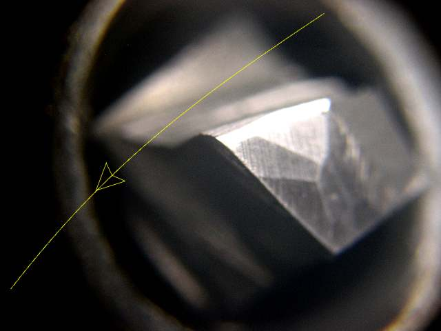

Learn what a fly cutter is and how to use one to get the best possible surface finish on a milling machine.
A Fly Cutter is any single point cutter that is used on a mill...
What's a Fly Cutter?
A Fly Cutter is any single point cutter that is used on a mill. The most common fly cutters are used as surfacing tools. But, you also see single point form tools referred to as fly cutters on mills, for example a form tool being used to create an involute on a gear tooth.
I get asked about Fly Cutters a lot, there is a lot of traffic to CNCCookbook on those keywords, and Fly Cutters are very commonly used by manual machinists. While the CNC crowd will more often prefer facemills, even many CNC machinists realize that a very fine surface finish may be better done by fly cutting. Remove all but one insert from your facemill, and finish improves. The exception are those most expensive facemills where you can individually adjust the cutting height of each insert to 0.0001", because that's what it takes, and that's why fly cutters can leave a better finish. Many say their secret weapon for fine aluminum finishing is a fly cutter with a PCD (diamond) insert.
So, for CNC'ers the reason to use a fly cutter is to achieve a fine finish. In most cases, the best finish will be one that can be done in a single pass, which implies a large diameter tool and therefore probably not a face mill.
Speaking of CNC'ers, here is a video of David DeCaussin's scratch built mini VMC. You'll see a fly cutter in the tool changer that comes into use at about 11:05 on the video. He's using it to make a fine finish on a part in one pass:
David DeCaussin's Mini VMC uses a Fly Cutter at about 11:05 on the video...
David has probably forgotten more about CNC than most people will ever know. If you don't recognize the name, he is the "D" in FADAL and was one of the original founders of the company.
Flycutters Can Give Better Finish than Face Mills,
But Why?
You often hear fly cutters can
give the best possible finishes (albeit at slower speeds), but why? If you remove all but one cutter
from a face mill this converts
the facemill to a flycutter which has no runout. The alternative is a facemill whose individual inserts can each be adjusted for height to eliminate the runout. With facemills that can't be adjusted for height so they all match, each insert cuts a different chipload and this is what results in imperfections in the surface finish.
The trick with fly cutter geometry is converting the geometry of an appropriate lathe tool to behave given the geometry of how the fly cutter will engage the workpiece. There's no use talking about it, as it's a very visual thing. Speaking of which, here are a bunch of fly cutter geometry pictures:
Not bad, but the point needs a big radius and more positive rake...
These fly cutters are intended to use a geometry created by just grinding an angle on a piece of HSS round, for example, from another cutter that was broken. There's no positive rake, but there is clearance from the angle and a big radius so the geometry is not bad. Note: The center drill is just a placeholder and is not being used as a cutter!
This one is very close, but the face is vertical and should tilt back away from us to create positive rake. The radius is about the minimum you'd want, but fine. Most people make the radius way too small...
Ideal fly cutter geometry for aluminum: big radius and tons of positive rake. This is Widgitmaster's design...
Widgitmaster's Homemade "Really Big" Fly Cutter
Why such a big fly cutter? Widgitmaster likes to finish all surfaces in a single pass to improve the finish. You'll also see him using really large end mills for the same reason in many cases. He remarks that even though they may chatter, it still gives a better finish than multiple passes.
The head was trammed to an angle, special vise jaws go on the outside of the vise, and look at Widgitmaster's homemade fly cutter!
Here are Widgitmaster's plans to build his fly cutter. I've got to try one of these and see how I like the finish. He takes 0.010" cuts with it. To make the square hole for the tool in the arm he cut it open, slot milled it, Tig welded it back together, and then turned the arm so you couldn't see the weld. Slick!
I'll bet the tool
was ground from an old dull endmill judging from the finish, but I could
be wrong about that. I would think a small radius would lead to a nicer
finish...
ATale of Two Flycutters
You get the best finish when
you can surface with a single pass of the cutter. This becomes difficult
on wide plates. It's one reason why flycutters are popular, aside from
being cheap: they cut a wide swath. But not all flycutters are equal.
It's nice to have one that cuts the widest possible swatch, and it's nice
to have smaller ones for more rigidity when cutting smaller work pieces.
Here are two flycutters:
Note the flycutter
on the left can be extended to a wide circle...
It takes two
passes with the smaller flycutter, which leaves an ugly line between the
passes...
Note how you
can see both sides of the fly cutter cutting. If they're even, your mill's
head is properly trammed. This one is close, but no cigar!
Using a flycutter
that is wide enough for a single pass is much nicer. Note that it makes
the tram issue worse when the cutter arm is longer (visualize the geometry
to see why). Now we only see marks from one side cutting...
Neat Fly Cutter Tip for Milling in Lathe
You can set up a mill to act like a lathe or a lathe to act like a mill. Neccesity is the mother of invention. When you have to get by using their lathe as a mill, it is amazing what can actually be done in this fashion. How about this nifty way to face the end of a big block with a fly cutter in the 4-jaw:
Block bolted to cross slide, fly cutter in the 4-jaw...
He's got a hand ground HSS cutter on one end and an insert
on the other. I don't think he means to cut with both at the same time,
they're just options. I like the flat to reduce the chance the bar will
slip. I'd also like to try an insert, but I would likely use TCMT's based
on my experience making a dovetail cutter.
Someone on the thread also suggested a set screw or other feature so that
if the bar slips it is captured in the hub and won't go flying across
the room.

A close up of the geometry on Evan's hand ground HSS fly
cutter bit. It sits vertically, so acts more like a facing cut on a lathe...
Monster Big Fly Cutter
Saw this recently on Facebook:
Weighs about 15lbs and cuts a 10.5" circle. Currently in use on a 50 Taper mill...
Precision
Fly Cutter
Here is a slightly
different kind of flycutter that came up on eBay the other day as a "Precision
Fly Cutter":
I don't know how
"precision" they are, but they're interesting. Note how they're
designed to fit a shell mill arbor. It's a good idea to give them as much support as possible as they have a lot of leverage on the spindle. I like the idea of using a shell mill arbor as opposed to putting a 3/4" shank on one and trying to stick it into a collet. Not a big fan of multi-cutter fly cutters. If you have more than one cutter in play, you should just use a Face Mill.
Tangential Tool Flycutter
Tangential tools are highly thought of for small manual lathes. They're easy to grind and the geometry makes them very rigid. Here is an example of the same principles applied to a fly cutter by the Mike's Workshop Blog:
I'd still want way more radius on the tips than is shown in Mike's article for the best finish.
Do you want to be a better CNC'er?
Get Better Tool Life, Surface Finish, and Material Removal Rates.